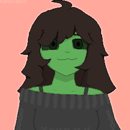
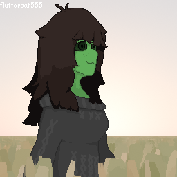

i'm working on creating a 3d vtuber model / vrchat avatar in blender. credit to sels for the basemesh and vrm for blender for material & vrm file support
i'm working on creating a 3d vtuber model / vrchat avatar in blender. credit to sels for the basemesh and vrm for blender for material & vrm file support
my profile pictures, made using aseprite and blender.

profile picture from january 2026. First piece with my current off shoulder shirt design.

profile picture from may 2026. traced & tweaked version of my vtuber model. used blender geometry nodes for background & aseprite for layering.